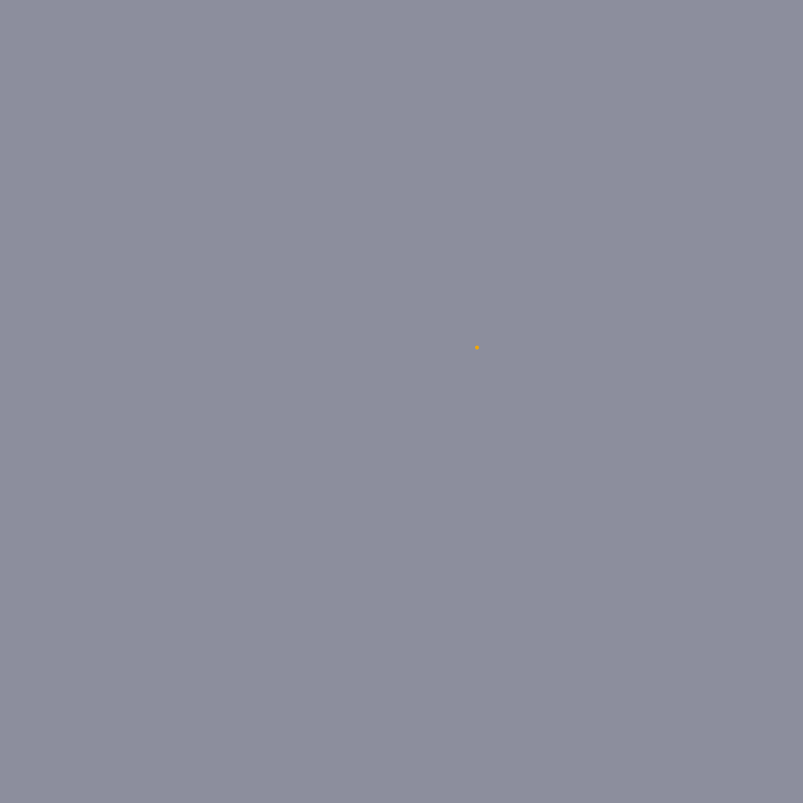
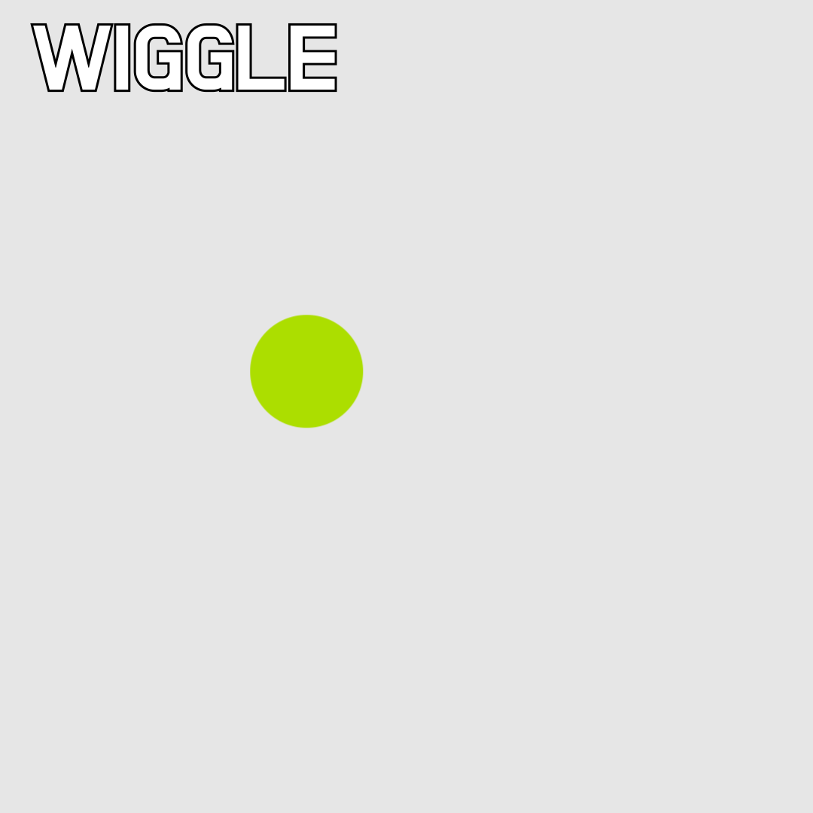
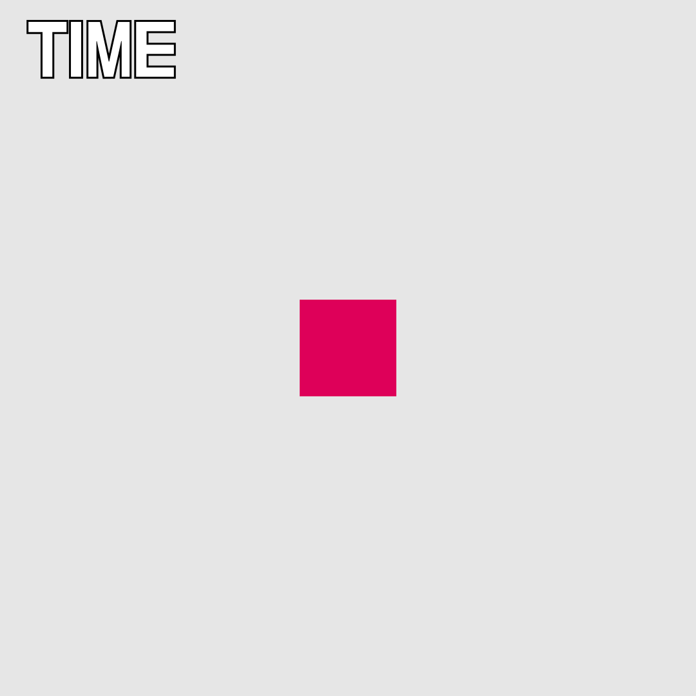
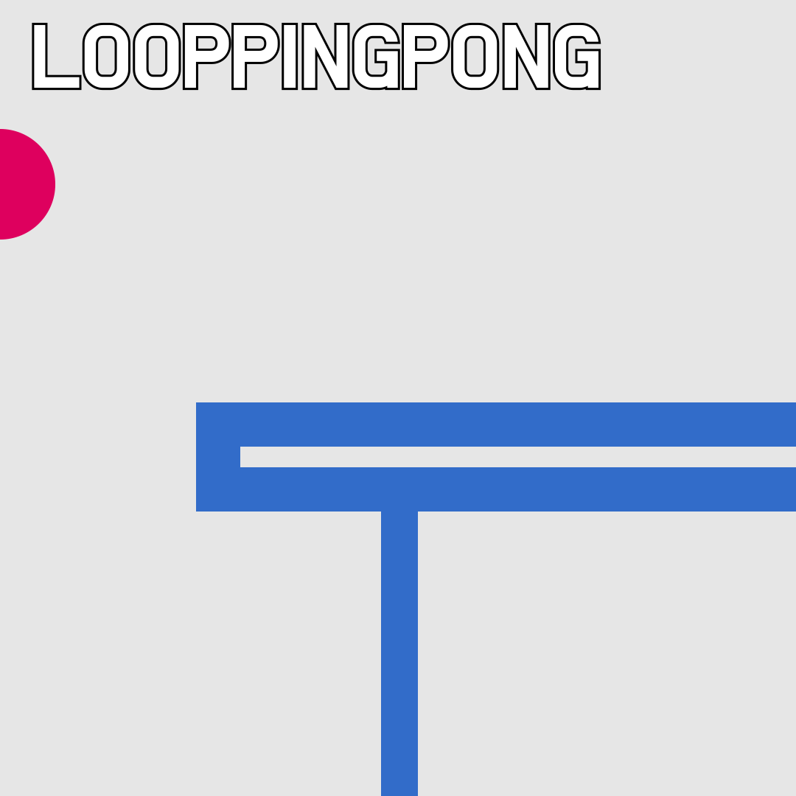
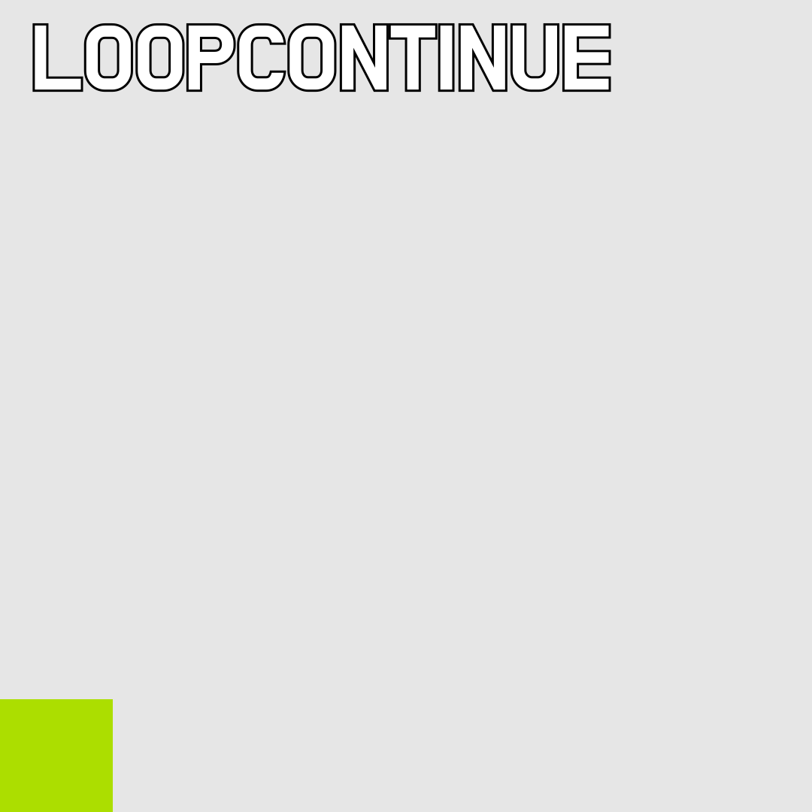
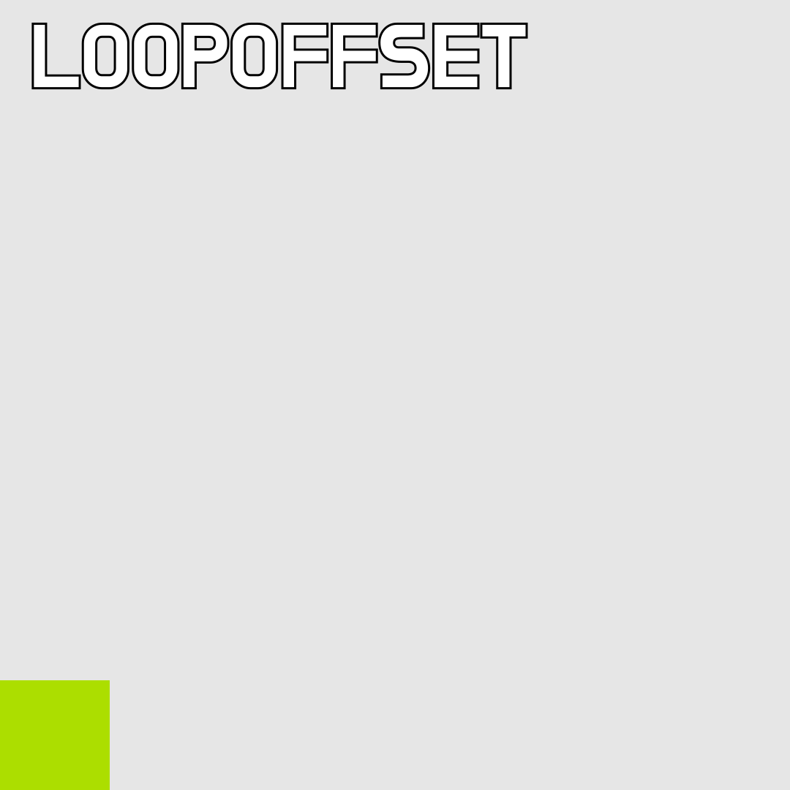
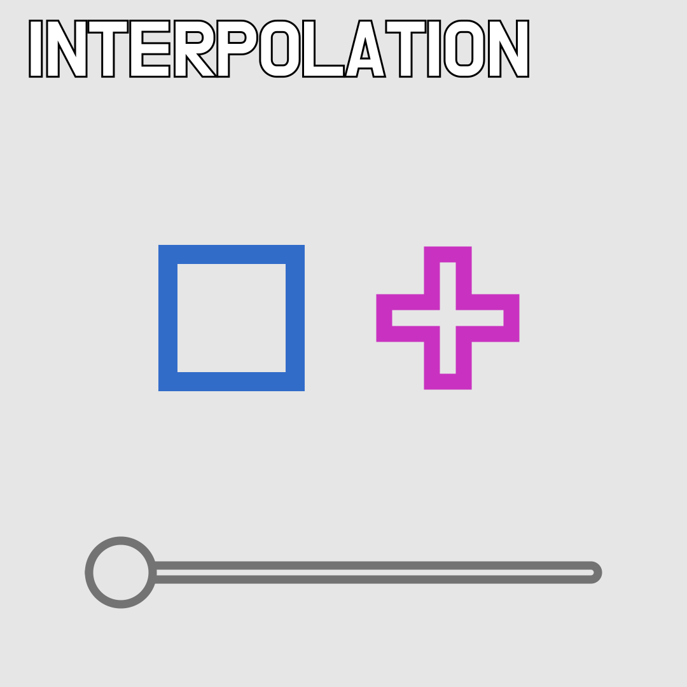

After Effects
SECTION 02. 기본 속성을 이용한 애니메이션


SECTION 03. 쉐입 레이어를 이용한 Fake 3D 애니메이션


[WO]
Bevel and Emboss;
사이즈를 얇게
Repeater;
Color Control;
Vibrance;
채도와 관련. 탐스럽게
Unsharp Mask;
외곽의 선명도
Noise;
편집 인쇄물의 느낌


[HELLO, STRANGER]
Drop Shadow;
후광 효과처럼 사용.
Bevel and Emboss;
볼륨감 추가. 사이즈를 줄이면 세련되 보임
Repeater;
Gradient Fill;
Blending Mode - Overlay;
색 대비가 뚜렷함. 중첩에 주로 쓰임
Time Remap + loopOut("cycle");
영상 길이 조절 + 반복
Wave Warp;
물결무늬 효과. 굵은 웨이브가 고급져 보임
Offset;
Glow;
Noise;
SECTION 04. 포토샵을 이용한 타이틀 애니메이션

[PS to AE]
Rasterize;
수정이 필요 없을 때 용량을 아끼기 위해서 깨준 상태
Layer Mask;
검은 부분을 감춘다
Smart Object;
AE의 Pre-Comp와 같은 기능
*Clipping Mask를 사용한 경우
Comp로 묶여서 불러옴. Group에 사용한 경우에는 Clipping Mask도 사라져버림
각각의 레이어로 가져와서 Matte 등의 기능을 사용
*Layer Mask를 사용한 경우
Layer Mask 영역 레이어로 가져와서 Matte 기능 사용


[Alpha Matte, Luma Matte]
Matte;
내가 원하는 부분만 보여주는 기능
Alpha Matte;
투명과 불투명 인식 후 어느 쪽을 보여줄지 선택
Luma Matte;
검정색과 흰색을 인식 후 어느 쪽을 보여줄지 선택
*Mask와 Matte의 차이점
Mask는 레이어가 하나 줄어드는 반면에 원본 소스를 자유롭게 움직이기 힘듦.
Matte는 원본 소스를 자유롭게 움직일 수 있는 반면에 레이어가 늘어남.
[Set Matte]
여러 레이어에 Matte를 줄 때 사용하는 Effect
단점은 Mask를 사용하거나 움직이는 레이어는 Comp로 묶어줘야 원활히 사용 가능

[Everyting of Motiongraphic]
숫자 키패드 * 타임라인에 마크
ctrl 을 누르고 클릭하면 지우기
ctrl + 마우스로 타임라인 이동 시에는 사운드 재생
null layer 2개를 사용하여 줌 아웃 효과
Turbulent Displace;
노이즈 타입에 따라 이미지를 일그러뜨림
Fractal Noise;
Camera Lens Blur;
Displacement Map;
채도가 없다면 Luminace 선택
Fast Box Blur;
Invert;
반전 효과
[CROISSANT]
텍스트에 빵 반죽의 쫀득한 느낌주기
Warp;
스타일 Arc Upper 위쪽만 반응
SECTION 05. 캘리그래피 스타일의 스트로크 애니메이션

[LINE]
외곽 라인에 애니매이션을 잡는 방법
- Solid + Stroke Effect
Stroke;
Paint Style - On Transparent 선만 이용
- Shape Layer + Trim Path
Offset Path;
Path를 기준으로 범위를 양쪽으로 늘림


[Duik]
Wiggle;
Amplitude 얼마만큼의 반경으로 움직일지
Frequency 빠르기
Blink;
보통 Opacity에 사용
Value A와 B를 번갈아 보여줌
Separate Dimensions;
Scale을 분리할 때 사용
Spring;
Follow Through
Elasticity 탄성
Damping 멈추는 속도
Smart Interpolation Ease값을 주는 것과 비슷
Anticipation 예비동작
Path point to null
Add bones;
각 path가 위에 있는 null로 연결됨
ㄴ handle을 조정할 수 있지만 null이 많아짐
[Create Nulls From Paths]
handle을 조정할 수 없지만 null 간소화
[BEAUTY INSIDE]
외곽 라인에 애니매이션을 잡는 방법
- Solid + Stroke Effect
Stroke;
Paint Style - On Transparent 선만 이용
- Shape Layer + Trim Path
Offset Path;
Path를 기준으로 범위를 양쪽으로 늘림
SECTION 06. 익스프레션을 이용한 자동화 애니메이션






[EXPRESSION]
Wiggle 효과를 익스프레션으로 재현
Position Alt 클릭 wiggle(x,y) x=Frequency y=Amplitude
Slider Control x값에 연결